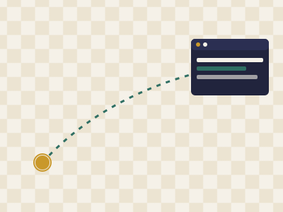

Tope Jinad
About Me
Full-Stack Developer, Ogbomosho
I build and support web systems day to day — from customer support on an ERP platform to freelance builds for nonprofits under my own studio, justjinad. I also teach Java and C programming, so I spend as much time explaining code as writing it.
Why WDD 131

Filling the Gap Between Backend and Browser
Most of my work lives in Java, C, and server-side logic. WDD 131 is where I formalize the front-end fundamentals — semantic HTML, CSS layout systems, and the DOM — that tie directly into the Next.js and WordPress client work I already do.